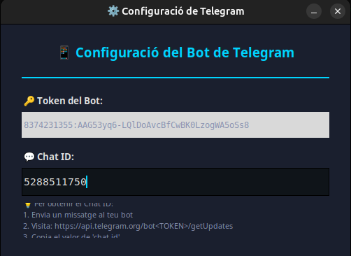
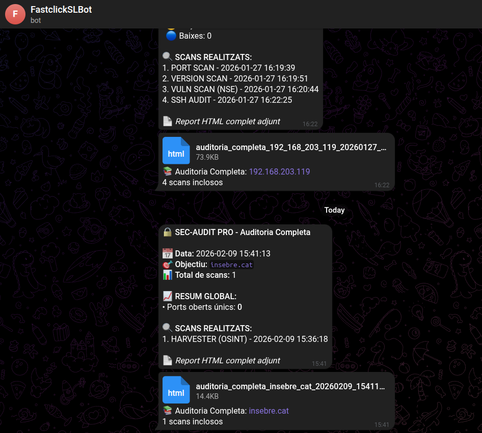

💻 Documentació Tècnica del Codi Bot - Telegram
Arquitectura Desenvolupament
┌──────────────────────────────────────────────────────────┐
│ Gestió de Configuració │
│ - load_telegram_config() │
│ - save_telegram_config() │
└────────────────────┬─────────────────────────────────────┘
│
▼
┌──────────────────────────────────────────────────────────┐
│ Interfície Gràfica │
│ - configure_telegram() │
│ - send_to_telegram() │
└────────────────────┬─────────────────────────────────────┘
│
▼
┌──────────────────────────────────────────────────────────┐
│ Format de Missatges │
│ - format_audit_summary() │
└────────────────────┬─────────────────────────────────────┘
│
▼
┌──────────────────────────────────────────────────────────┐
│ Funcions d'Enviament │
│ - send_telegram_message() │
│ - send_telegram_document() │
└────────────────────┬─────────────────────────────────────┘
│
▼
┌──────────────────────────────────────────────────────────┐
│ Telegram Bot API │
│ - POST /sendMessage │
│ - POST /sendDocument │
└──────────────────────────────────────────────────────────┘
Dependències
requests: HTTP requestsjson: Configuracióos: Gestió fitxersdatetime: Timestampstkinter: GUI- API: Telegram Bot API v6.0+
Funcions de Configuració
1. load_telegram_config() -> dict
Ubicació: auditoria_definitiu.py (línies 197-210)
Propòsit: Carrega configuració des de telegram_config.json.
Codi:
def load_telegram_config():
if os.path.exists(CONFIG_FILE):
try:
with open(CONFIG_FILE, 'r') as f:
config = json.load(f)
return config
except Exception as e:
print(f"Error carregant configuració: {e}")
return {}
return {}
Retorn:
{
'bot_token': '8374231355:AAG53yq6-LQlDoAvcBfCwBK0LzogWA5oSs8',
'chat_id': '123456789'
}
2. save_telegram_config(bot_token, chat_id)
Ubicació: auditoria_definitiu.py (línies 212-221)
Propòsit: Guarda configuració a telegram_config.json.
Paràmetres:
- bot_token (str): Token del bot
- chat_id (str): ID del chat
Codi:
def save_telegram_config(bot_token, chat_id):
config = {
'bot_token': bot_token,
'chat_id': chat_id
}
with open(CONFIG_FILE, 'w') as f:
json.dump(config, f, indent=2)
Funcions d'Enviament
3. send_telegram_message(chat_id, message, bot_token) -> (bool, str)
Ubicació: auditoria_definitiu.py (línies 223-238)
Propòsit: Envia missatge de text a Telegram.
Paràmetres:
- chat_id (str): ID del chat
- message (str): Text del missatge
- bot_token (str): Token del bot
API Call:
url = f"https://api.telegram.org/bot{bot_token}/sendMessage"
payload = {
'chat_id': chat_id,
'text': message,
'parse_mode': 'HTML'
}
response = requests.post(url, json=payload)
Retorn: (bool, str) - (èxit, missatge)
Parse Mode HTML: Permet tags <b>, <i>, <code>, <pre>
4. send_telegram_document(chat_id, file_path, caption, bot_token) -> (bool, str)
Ubicació: auditoria_definitiu.py (línies 240-261)
Propòsit: Envia fitxer a Telegram.
Paràmetres:
- chat_id (str): ID del chat
- file_path (str): Ruta al fitxer
- caption (str): Text descriptiu
- bot_token (str): Token del bot
API Call:
url = f"https://api.telegram.org/bot{bot_token}/sendDocument"
with open(file_path, 'rb') as file:
files = {'document': file}
data = {
'chat_id': chat_id,
'caption': caption
}
response = requests.post(url, files=files, data=data)
Limitació: Màxim 50 MB per fitxer
5. test_telegram_connection(chat_id, bot_token) -> (bool, str)
Ubicació: auditoria_definitiu.py (línies 263-266)
Propòsit: Prova connexió enviant missatge de test.
Codi:
def test_telegram_connection(chat_id, bot_token=DEFAULT_BOT_TOKEN):
message = "🧪 Test de connexió\n\nSi reps aquest missatge, la configuració és correcta! ✅"
return send_telegram_message(chat_id, message, bot_token)
Format de Missatges
6. format_audit_summary(scan_data, target, scan_type) -> str
Ubicació: auditoria_definitiu.py (línies 268-337)
Propòsit: Formata resum per Telegram.
Paràmetres:
- scan_data (dict): Dades del scan
- target (str): IP/domini
- scan_type (str): Tipus de scan
Estructura:
- Capçalera:
summary = "🔒 <b>SEC-AUDIT PRO</b> - Resum d'Auditoria\n\n"
summary += f"📋 <b>Tipus:</b> {scan_type}\n"
summary += f"🎯 <b>Objectiu:</b> {target}\n\n"
- Resultats (PORT SCAN):
if 'ports' in scan_data:
summary += "📊 <b>RESULTATS:</b>\n"
summary += f"✅ Ports Oberts: {scan_data['total_open']}\n"
summary += f"❌ Ports Tancats: {scan_data['total_closed']}\n\n"
summary += "🔌 <b>PORTS PRINCIPALS:</b>\n"
for port in scan_data['ports'][:5]:
summary += f" • {port['port']}/{port['protocol']} - {port['service']}\n"
- Resultats (VULN SCAN):
if 'vulnerabilities' in scan_data:
summary += "📊 <b>RESULTATS:</b>\n"
summary += f"🔴 Crítiques: {scan_data['critical_count']}\n"
summary += f"🟠 Altes: {scan_data['high_count']}\n\n"
summary += "⚠️ <b>VULNERABILITATS:</b>\n"
for vuln in scan_data['vulnerabilities'][:3]:
summary += f" • [{vuln['severity']}] {vuln['cve']}\n"
- Resultats (HARVESTER):
if 'emails' in scan_data:
summary += "📊 <b>RESULTATS:</b>\n"
summary += f"📧 Emails: {len(scan_data['emails'])}\n"
summary += f"🌐 Hosts: {len(scan_data['hosts'])}\n\n"
summary += "🔍 <b>TROBALLES:</b>\n"
for email in scan_data['emails'][:5]:
summary += f" • {email}\n"
Limitació: Màxim 4096 caràcters (límit Telegram)
Mètodes GUI
7. AuditorGUI.configure_telegram(self)
Ubicació: auditoria_definitiu.py (línies 2664-2810)
Propòsit: Mostra diàleg de configuració.
Components:
- Finestra:
dialog = Toplevel(self.root)
dialog.title("⚙️ Configuració de Telegram")
dialog.geometry("500x400")
dialog.transient(self.root)
dialog.grab_set()
- Camp Chat ID:
entry_chat_id = Entry(dialog, ...)
entry_chat_id.pack(fill="x", padx=20, pady=10)
- Botó Provar:
def test_connection():
chat_id = entry_chat_id.get().strip()
config = load_telegram_config()
bot_token = config.get('bot_token', DEFAULT_BOT_TOKEN)
success, message = test_telegram_connection(chat_id, bot_token)
if success:
messagebox.showinfo("Èxit", "Connexió correcta! ✅")
else:
messagebox.showerror("Error", f"Error:\n{message}")
- Botó Guardar:
def save_config():
chat_id = entry_chat_id.get().strip()
config = load_telegram_config()
bot_token = config.get('bot_token', DEFAULT_BOT_TOKEN)
save_telegram_config(bot_token, chat_id)
self.telegram_status_var.set("✅ Telegram configurat")
dialog.destroy()
8. AuditorGUI.send_to_telegram(self)
Ubicació: auditoria_definitiu.py (línies 2812-2907)
Propòsit: Mostra diàleg per enviar a Telegram.
Verificacions:
# 1. Comprovar configuració
config = load_telegram_config()
if not config.get('chat_id'):
show_modern_notification(self.root, "Error", "Configura Telegram primer", "warning")
return
# 2. Comprovar dades
if not self.last_scan_data:
show_modern_notification(self.root, "Error", "No hi ha cap scan", "warning")
return
Opcions:
# Opció 1: Només resum
btn_summary = Button(dialog, text="📝 Només Resum", command=send_summary)
# Opció 2: Resum + HTML
btn_report = Button(dialog, text="📄 Resum + Report HTML", command=send_with_report)
# Opció 3: Auditoria completa
btn_complete = Button(dialog, text="📚 Auditoria Completa", command=send_complete_audit)
9. AuditorGUI._send_summary_to_telegram(self, chat_id, bot_token)
Ubicació: auditoria_definitiu.py (línies 2909-2934)
Propòsit: Envia només resum de text.
Codi:
def _send_summary_to_telegram(self, chat_id, bot_token):
# 1. Formatar
summary = format_audit_summary(
self.last_scan_data['data'],
self.last_scan_data['target'],
self.last_scan_data['type']
)
# 2. Enviar
success, message = send_telegram_message(chat_id, summary, bot_token)
# 3. Notificar
if success:
show_modern_notification(self.root, "Enviat!", "✅", "success")
else:
show_modern_notification(self.root, "Error", message, "error")
10. AuditorGUI._send_report_to_telegram(self, chat_id, bot_token)
Ubicació: auditoria_definitiu.py (línies 2936-2997)
Propòsit: Envia resum + fitxer HTML.
Codi:
def _send_report_to_telegram(self, chat_id, bot_token):
# 1. Generar HTML
html_content = generate_html_report(
self.last_scan_data['data'],
self.last_scan_data['target'],
self.last_scan_data['type']
)
# 2. Guardar fitxer
filename = f"sec_audit_{target}_{timestamp}.html"
with open(filename, 'w', encoding='utf-8') as f:
f.write(html_content)
# 3. Enviar resum
summary = format_audit_summary(...)
send_telegram_message(chat_id, summary, bot_token)
# 4. Enviar fitxer
send_telegram_document(chat_id, filename,
caption=f"📄 Report: {scan_type}",
bot_token=bot_token)
# 5. Eliminar temporal
os.remove(filename)
11. AuditorGUI._send_complete_audit_to_telegram(self, chat_id, bot_token)
Ubicació: auditoria_definitiu.py (línies 2999-3118)
Propòsit: Envia auditoria completa.
Codi:
def _send_complete_audit_to_telegram(self, chat_id, bot_token):
target = self.last_scan_data['target']
# 1. Obtenir historial
scan_list = self.scan_history[target]
# 2. Generar report complet
html_content = generate_complete_audit_report(scan_list, target)
# 3. Guardar
filename = f"auditoria_completa_{target}_{timestamp}.html"
with open(filename, 'w', encoding='utf-8') as f:
f.write(html_content)
# 4. Enviar resum
summary = f"📚 <b>Auditoria Completa</b>\n\n"
summary += f"🎯 Objectiu: {target}\n"
summary += f"📊 Scans: {len(scan_list)}\n"
send_telegram_message(chat_id, summary, bot_token)
# 5. Enviar fitxer
send_telegram_document(chat_id, filename,
caption=f"📚 Auditoria de {target}",
bot_token=bot_token)
# 6. Eliminar temporal
os.remove(filename)
Variables i Constants
CONFIG_FILE = "telegram_config.json"
DEFAULT_BOT_TOKEN = "8374231355:AAG53yq6-LQlDoAvcBfCwBK0LzogWA5oSs8"
Variables d'instància:
self.last_scan_data = None # Últim scan
self.scan_history = {} # {target: [scans]}
self.telegram_status_var = StringVar() # Estat
Gestió d'Errors
Errors capturats:
- Configuració corrupta:
try:
config = json.load(f)
except Exception as e:
print(f"Error: {e}")
return {}
- Error API:
try:
response = requests.post(url, json=payload)
if response.status_code == 200:
return True, "OK"
else:
return False, f"Error: {response.text}"
except Exception as e:
return False, f"Excepció: {str(e)}"
- Fitxer no trobat:
try:
with open(file_path, 'rb') as file:
# ...
except FileNotFoundError:
return False, "Fitxer no trobat"
Flux de Dades
1. Usuari executa scan
↓
2. Dades guardades a self.last_scan_data
↓
3. Clic a "📤 ENVIAR A TELEGRAM"
↓
4. send_to_telegram() → Mostra diàleg
↓
5. Usuari tria opció
↓
6. format_audit_summary() → text
↓
7. send_telegram_message() → API
↓
8. Usuari rep missatge a Telegram
RESULTAT BOT TELEGRAM

